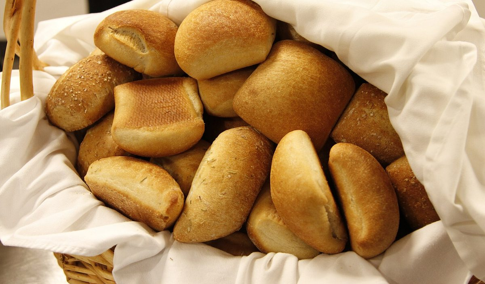
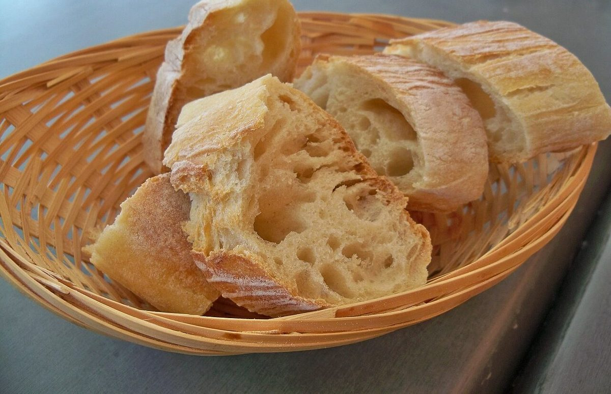
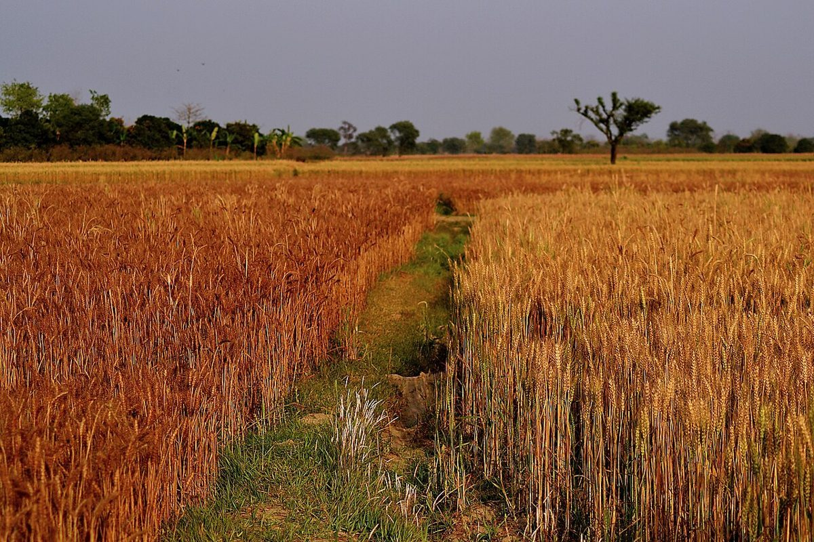

イメージ写真(店舗の実際の商品ではありません)
掲載写真はフリー素材のイメージで、店舗の実際の商品・店内ではありません。他地域で撮影されたものや撮影地が不明なものを含みます。

一
パンのある暮らしへ
SaVa?BAKERYは、兵庫県洲本市五色町広石下1461にあるベーカリーです。
朝のテーブルに、おやつの時間に、ふと立ち寄ったついでに。パンがそばにある毎日は、それだけで少しやわらかい気持ちになれるものです。
お取り扱いのパンやメニューの詳細は、現在準備中です。最新の情報は、Instagramまたはお電話でご確認ください。

二
小麦から、食卓まで
パンは、小麦粉、水、塩、酵母といったシンプルな材料から生まれます。バターや砂糖、牛乳などを加えることで、香りや食感はさまざまに変わります。
※ここに書いたのは、パンづくり全般についての一般的なお話です。SaVa?BAKERYで使用している素材や製法については、準備中です(お問い合わせください)。

麦の育つ景色を思いながら、ひと口。
イメージ写真(撮影地は不明です。お店の周辺の風景ではありません)
三
お店の情報
- 営業時間
- 準備中(お問い合わせください)
- 定休日
- 準備中(お問い合わせください)
- 住所
- 兵庫県洲本市五色町広石下1461
- @sava_bakery

ご来店前に、営業日や商品の状況をお電話かInstagramでご確認いただくと安心です。